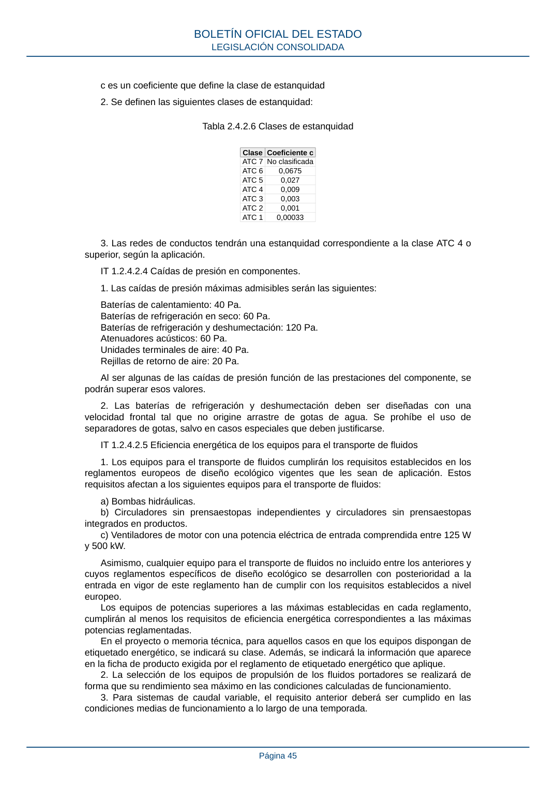

DB-HE2 RITE · edición 2022-08-02 · capa asociada
Documento RITE-asociada · SHA-256 del PDF ad1680c83bf4c7f5c656af1794c32ad0669ad9f36ac293737ff3f95177ff7b26
Página física 45 de 97.
Copia fiel del PDF fuente · Fuente oficial
Ficha de la disposición en la fuente oficial
Texto extraído y reorganizado: Basado en datos de la Agencia Estatal Boletín Oficial del Estado. PDF reproducido: Fuente de los datos: Agencia Estatal Boletín Oficial del Estado.
Formato: Texto de la página (Markdown)
c es un coeficiente que define la clase de estanquidad 2. Se definen las siguientes clases de estanquidad: Tabla 2.4.2.6 Clases de estanquidad Clase Coeficiente c ATC 7 No clasificada ATC 6 0,0675 ATC 5 0,027 ATC 4 0,009 ATC 3 0,003 ATC 2 0,001 ATC 1 0,00033 3. Las redes de conductos tendrán una estanquidad correspondiente a la clase ATC 4 o superior, según la aplicación. IT 1.2.4.2.4 Caídas de presión en componentes. 1. Las caídas de presión máximas admisibles serán las siguientes: Baterías de calentamiento: 40 Pa. Baterías de refrigeración en seco: 60 Pa. Baterías de refrigeración y deshumectación: 120 Pa. Atenuadores acústicos: 60 Pa. Unidades terminales de aire: 40 Pa. Rejillas de retorno de aire: 20 Pa. Al ser algunas de las caídas de presión función de las prestaciones del componente, se podrán superar esos valores. 2. Las baterías de refrigeración y deshumectación deben ser diseñadas con una velocidad frontal tal que no origine arrastre de gotas de agua. Se prohíbe el uso de separadores de gotas, salvo en casos especiales que deben justificarse. IT 1.2.4.2.5 Eficiencia energética de los equipos para el transporte de fluidos 1. Los equipos para el transporte de fluidos cumplirán los requisitos establecidos en los reglamentos europeos de diseño ecológico vigentes que les sean de aplicación. Estos requisitos afectan a los siguientes equipos para el transporte de fluidos: a) Bombas hidráulicas. b) Circuladores sin prensaestopas independientes y circuladores sin prensaestopas integrados en productos. c) Ventiladores de motor con una potencia eléctrica de entrada comprendida entre 125 W y 500 kW. Asimismo, cualquier equipo para el transporte de fluidos no incluido entre los anteriores y cuyos reglamentos específicos de diseño ecológico se desarrollen con posterioridad a la entrada en vigor de este reglamento han de cumplir con los requisitos establecidos a nivel europeo. Los equipos de potencias superiores a las máximas establecidas en cada reglamento, cumplirán al menos los requisitos de eficiencia energética correspondientes a las máximas potencias reglamentadas. En el proyecto o memoria técnica, para aquellos casos en que los equipos dispongan de etiquetado energético, se indicará su clase. Además, se indicará la información que aparece en la ficha de producto exigida por el reglamento de etiquetado energético que aplique. 2. La selección de los equipos de propulsión de los fluidos portadores se realizará de forma que su rendimiento sea máximo en las condiciones calculadas de funcionamiento. 3. Para sistemas de caudal variable, el requisito anterior deberá ser cumplido en las condiciones medias de funcionamiento a lo largo de una temporada. BOLETÍN OFICIAL DEL ESTADO LEGISLACIÓN CONSOLIDADA Página 45

Datos candidatos: compruebe celdas y notas en el PDF.